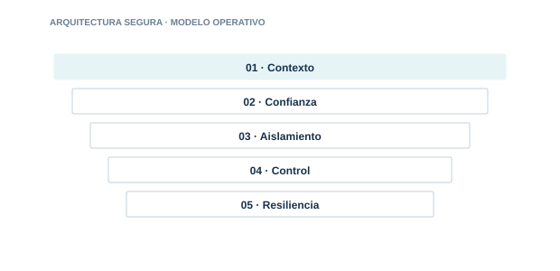

Arquitectura segura
Diseñar patrones seguros, observables y gobernables para sistemas de IA.

RAG empresarial
Diseña RAG con autorización documental. separación de tenants y fuentes confiables.
IA agéntica
Construye agentes con límites claros. herramientas confiables y supervisión humana.
IA privada
Decide cuándo usar modelos privados. híbridos o air-gapped.
Patrones API
Centraliza acceso. políticas. cuotas. observabilidad y protección de modelos.
Acceso seguro Edge y ZTNA
Protege el acceso humano y máquina a servicios de IA desde cualquier ubicación.
LLM local: instalación y hardening
Instala un modelo en local y. sobre todo. endurécelo: bind. parches. firewall. proxy y aislamiento.
RAG vs AI Agents vs Agentic RAG
Compara recuperación, autonomía y recuperación agéntica: arquitectura, seguridad y cuándo usar cada enfoque.
Cada guía incluye explicación, implantación, controles, evidencias, errores habituales, métricas y referencias.